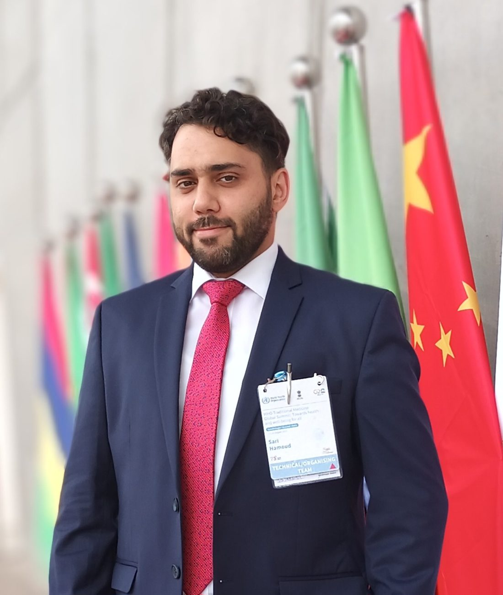
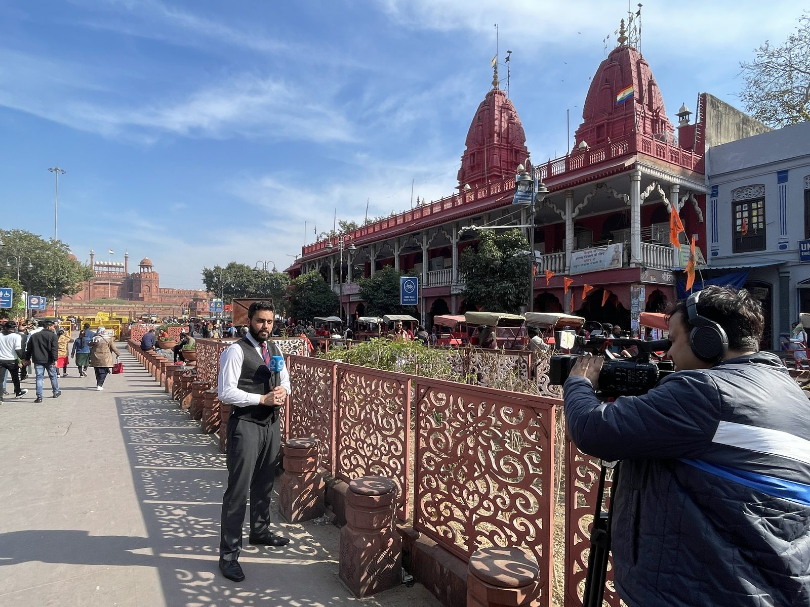
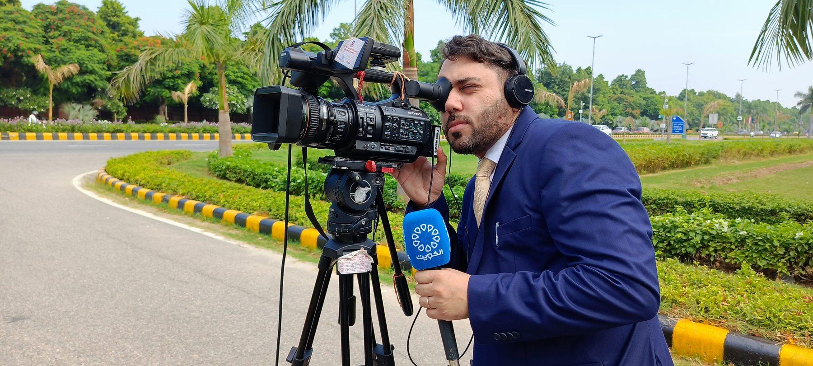

Research
Sentence comprehension, memory, parsing, multilingualism and language processing, plus the role of evidence in linguistic theory.
د. ساري حمود
Lead simultaneous interpreter (Arabic ↔ English), psycholinguist and international journalist, based in New Delhi and Homs.
I have interpreted for ministers, judges, heads of delegation and UN agencies, and I teach and research how people process language. I take on conference interpreting, team leadership, media work and academic collaboration.

Simultaneous and consecutive interpretation, on site and remote, for multilateral organizations, ministries and diplomatic delegations. I often lead the interpreting team.
A selection. I also interpreted at the CCSCH7 session in Kochi, at CEDAW sessions and UN-backed forums on women's rights and climate, and at defence, trade and investment events. The full list with samples is on request.
I am certified as a remote simultaneous interpreter on three platforms: Interprefy (RSI and AIIC-compatible, 2023), KUDO (2022) and Interactio (2022). I also hold a Diploma in UN Studies from the Institute of UN Studies, New Delhi.
My PhD in Psycholinguistics shapes how I interpret. I study how listeners hold, parse and recover meaning under load, which is the same problem an interpreter solves every minute.
I speak Arabic in several dialects and English natively through my mother's side. I also work in Hindi at a professional level and speak German at B1.
I am a lecturer at Homs University. My PhD at Jawaharlal Nehru University examined memory and parsing strategies in multilingual sentence comprehension.
Sentence comprehension, memory, parsing, multilingualism and language processing, plus the role of evidence in linguistic theory.
English language, phonetics, translation, reading and comprehension, ESP and related subjects, with practical learning resources for students.
Co-author of a descriptive grammar of Gaddi, an Indo-Aryan language of Himachal Pradesh. Read the grammar.
Hamoud, S. (2020). Scientific Evidence Bias in Linguistic Theory. Language in India, 20(4), ISSN 1930-2940.
Hamoud, S. (2015). The humanizing potential of using rap music in English language teaching: The hip-hop method. The Proceedings of English Language and Literature: A Tool for Humanising, 219–223.
I work as an international journalist and field producer, making television reports, interviews, voice-over packages and cultural stories. My interests are Syria, culture and heritage, education and international affairs.



Lecture notes, diagnostic materials, exercises and announcements for my English language and grammar courses will be collected here as the site develops.
For conference assignments, media work or academic collaboration, please write with the date, location, languages and format (on site or remote). I will reply with availability and terms.